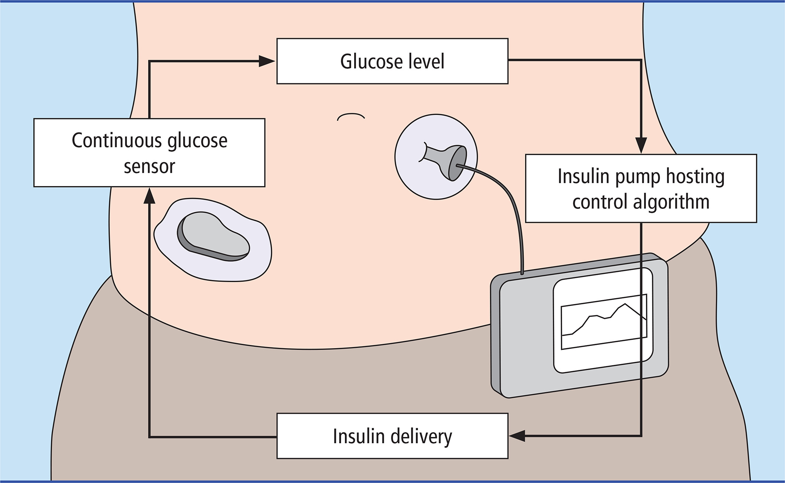
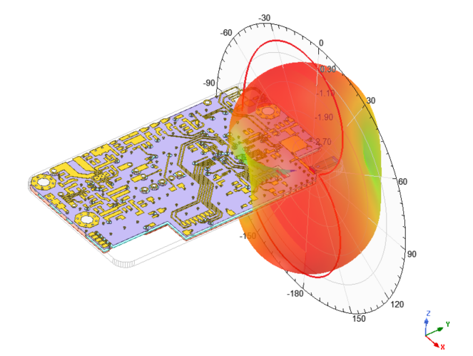
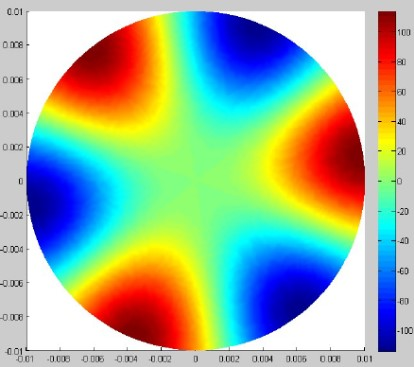
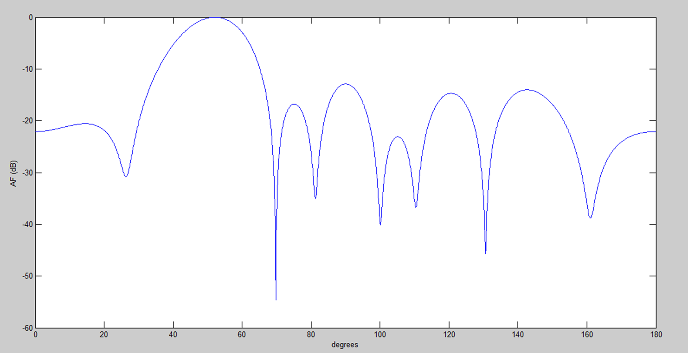
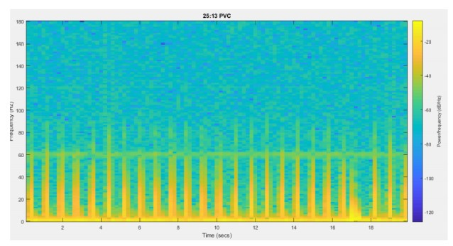

About me
Hi there! I am Konstantinos Diamantis, a Software Engineer with more than 5 years of experience CERN, avionics and freelance projects. I am specialized in debugging and optimizing large C/C++ codebases,
numerical and real-time computations, with strong proficiency in the GCC toolchain, GDB, and performance tuning for high-efficiency software.
As a freelancer and technical consultant I have consulted different companies for their technical orientation.
📢
Need high-performance software for low-level systems, HPC, real-time computations or custom web applications with scalable and efficient database solutions?
Tech Stack
Experience
Software Engineer ~ CERN, European Organization for Nuclear Research
CERN (European Organization for Nuclear Research) is one of the world's largest scientific research centers, which operates the Large Hadron Collider (LHC), the world's most powerful particle accelerator. I was working on B-Train systems and low level software development. B-Trains are used at CERN in order to monitor the magnetic field of the accelerator magnets in Real-Time. I worked on the Hardware Abstraction Level (HAL) of the low-level drivers and improved the Real-time monitoring systems.
Software Engineer ~ CERN, European Organization for Nuclear Research
During my time at CERN, I also wroked as a Software Engineer for the developmet of tools to support magnet engineers and physicists. My main focus was on ROXIE, which is a computational software suite for the electromagnetic simulation and optimization of accelerator magnets. I extened the software features, performance and stability as well as the software infrastructure.


Embedded Software Engineer ~ ASAT, Aristotle Space & Aeronatics Team
Embedded Software Engineer ~ CERN, European Organization for Nuclear Research
I worked full-time as an Embedded Software Engineer in the Rocketry Project of Aristotle Space & Aeronautics Team (ASAT). I was working on the Avionics Subsystem of the rocket and I was responsible for Embedded Software development, major enhancements in telemetry, and sensors upgrade. My work involved enhancing the performance and reliability of the rocket's avionics systems.

Research Engineer ~ Helmholtz-Institute, RWTH Aachen University
My work focused on the implementation of a novel pharmacokinetics model of insulin-glucose dynamics and control for Type-1 Diabetes (T1D) mellitus. Partial Differential Equations (PDEs) were developed to simulate the movement of insulin and glucose. Additionally, the model parameters were were optimized and a PID controller for regulation was added. As a Type 1 myself I was able to provide valuable insights and feedback on the model's accuracy and usability.


Computational Electromagnetics Engineer ~ Fieldscale
Fieldscale is a company that focuses on the development of algorithms for computational electromagnetics. I worked in R&D team and was involved on the development and testing the performance of a prototype High Frequency EM Solver that used Boundary Element Method. The software was written in C++ and I was testing the performance of planar microstrip antennas for WLAN/Bluetooth and UWB applications. I also worked on the development of Python to automate the geometries and testing of the solver.
Education
I am holding a Master's degree in Electrical & Computer Engineering from the Department of Telecommunications of Aristotle University of Thessaloniki.
Aristotle University of ThessalonikiMaster of Engineering in Electrical & Computer Engineering
Specialization: Telecommunications
GPA: 8.40 / 10.00 (Top 10% of the class)
ECTS: 307
High School Diploma, Agia, Larisa, GreeceTechnology Sector
Sector: Technology
Grade: 19.9 / 20.00 (Top of the class)
ECTS: 307
Publications
A Software Framework to Enable Model-Based Systems Engineering for Accelerator Magnets
International Conference on the Computation of Electromagnetic Fields in Accelerator Magnets (COMPUMAG 2025)
Data-Driven Modeling of Accelerator Magnets
International Conference on the Computation of Electromagnetic Fields in Accelerator Magnets (COMPUMAG 2025)
Projects
Some of the projects I have worked on:
Electromagnetics
Electrostatic and Electromagnetic wave propagation simulations with FEM: EM field, TE & TM modes of a circular waveguide, scattering of a plane wave from a perfect electric conductor cylinder using PML.Electrostatic and Electromagnetic wave propagation simulations with FEM.

Speaker Recognition
Development of a Voice Activity Detector and a Speaker Recognition System. Feature extraction in time and frequency domain. Classification in ten individual speakers.Voice Activity Detector and Speaker Recognition System

Real-Time Producer-Consumer Problem
Variation of Producers-Consumers problem with pthreads in C. Shared Queue of pointers to functions and arguments in Heap. Cross-compiled for Raspberry-Pi Zero.Real-Time Producer-Consumer Problem

RF Array Signal Processing
The project is related to BeamForming and Direction of Arrival (DoA) algorithms and its scope is the analysis and understanding of such techniques.RF Array Signal Processing

Biomedical Engineering
Digital Signal Processing in Electroencephalography signals. Spike detection with threshold method and isolation with windowing. Temporal and spectral feature extraction. Classification in three neurons.Signal Processing in Electroencephalography (ECG) signals

Higher Order Statistics and Adavnced Signal Processing Techniques
Familiarization with Higher Order Statistics (Spectra) and ARMA (Autoregressive Moving Average) models. Time Frequency Analysis techniques (Short Time Fourier, Hilbert-Huang and Wavelet Transform) are implemented in ECG signals.Higher Order Statistics and Adavnced Signal Processing Techniques

Java heuristic board game
Development of a board game, named "Hunger Games". Implementation of heuristic-decision player.Data Structures